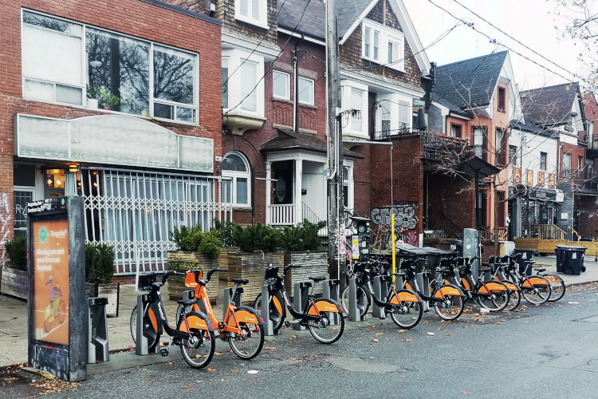

As cycling becomes an increasingly popular mode of transportation in Toronto, one trend is gaining significant traction: the rise of electric bikes (e-bikes) within Toronto's Bike Share system. Ridership data shared by Bike Share Toronto from June 2024 has given us a detailed look at how these e-bikes, known as EFIT, compare to their classic non-electric counterparts, the ICONIC bikes.
The introduction of e-bikes in Toronto is not just about offering a new mode of transportation –it’s about making cycling more accessible, efficient, and appealing to a wider range of people. Whether it’s older adults who may need extra assistance with pedaling, people with longer commutes, or those who want to avoid arriving at their destination sweaty, e-bikes have the potential to address many of the challenges that have historically limited bike usage in the city.
From a sustainability perspective, e-bikes provide a viable alternative to cars for longer trips and can help cut down on vehicle emissions, especially during peak traffic hours. As the city works toward its ambitious net-zero targets, the role of e-bikes in encouraging a shift from motorized transport to more sustainable, human-powered options cannot be understated.
Overall, in June 2024, there were more than 762,000 Bike Share trips in Toronto. 17.4% of these trips were by e-bike. Looking at the relative characteristics of these trips reveals some intriguing patterns that could shape the future of urban mobility in Toronto.
One of the most notable differences between e-bikes and classic bikes is the distance covered during trips. On average, e-bike users tend to ride
further, capitalizing on the extra power that electric motors provide.
These longer trips suggest that e-bikes are enabling riders to explore
parts of the city that might have been less accessible via traditional
pedal bikes. Whether it's covering more ground on commutes or leisurely
rides, the data reflects how e-bikes are expanding the possibilities for
cycling trips across Toronto.
Interestingly, despite these longer trips, there is little difference in
the duration of e-bike trips compared to classic bikes. Riders are thus traveling faster on e-bikes on average, which makes sense given their
assisted pedaling capabilities.
Higher speeds not only allow cyclists to
reach destinations quicker but could also make cycling more attractive to
those who may have previously found it too time-consuming or physically
demanding. With e-bikes, the barriers to entry for cycling are lowered,
making it a more practical and inclusive option for a broader demographic.
Another key insight from the data is that e-bike trips tend to involve
slightly more elevation gain. In a city like Toronto, where hills and
slopes can make cycling more challenging, the extra boost from an e-bike's
motor can make a big difference. For example, riders can now tackle
steeper routes, such as those leading to neighbourhoods like Rosedale or
the Scarborough Bluffs, with greater ease. This ability to flatten out the
city’s topography opens up new opportunities for riders, making cycling a
more attractive option in areas that were previously considered difficult
to navigate on a bike.
The data also shows some intriguing differences in the time of day when e-bikes are used. While we’re still investigating the reasons behind this
trend, it could be related to the availability of bikes at different
stations during peak and off-peak hours. E-bikes may also be more popular
for commuters who are looking for a reliable and faster way to get to work
or run errands during busy periods. Understanding these temporal patterns
will be crucial as we explore how to optimize the distribution and
availability of e-bikes throughout the day.
Whether it's covering more ground on commutes or leisurely rides, the data reflects how e-bikes are expanding the possibilities for cycling trips across Toronto.
At the same time, recent developments in policy and urban mobility have brought new challenges and opportunities for cyclists. The Ontario government has officially passed Bill 212 – a controversial piece of legislation that gives the province sweeping control over municipal bike lanes. The fast-tracked bill, which passed at Queen's Park in late 2024, requires municipalities to seek provincial approval to install bike lanes when doing so would reduce lanes for vehicle traffic. This bill also permits the removal of three major bike lanes in Toronto, located on Bloor Street, Yonge Street, and University Avenue. However, provincial officials have yet to provide specific details on whether all or only sections of these lanes will be removed. Many cycling advocates have expressed concerns, staging protests to oppose the legislation's potential impact on active transportation.
In addition to Bill 212, a significant update on e-bike policies has emerged from the Toronto Transit Commission (TTC). Effective November 15, 2024, lithium-ion-powered e-scooters and e-bikes are prohibited on TTC vehicles and inside stations through April 15, following a board decision aimed at mitigating fire risks. This decision follows a December 31, 2023, incident when an e-bike’s lithium-ion battery caught fire onboard a subway train at Sheppard-Yonge Station.
“I’ve tried to do the best to strike a balance between safety and equity,” TTC Board Chair Jamaal Myers stated. Although the board considered alternative safety measures, such as requiring batteries to meet specific standards, staff concluded that a seasonal ban was the safest course of action. To address the needs of riders impacted by the ban, Myers has proposed collaboration between the TTC, food delivery companies, and labour unions to explore secure e-bike storage and charging solutions near transit stations, with a policy expected by March 2025.
The ban does not apply to electric wheelchairs or other mobility devices used by individuals with disabilities, which remain permitted on TTC vehicles under specific conditions.
While the TTC’s racial equity office acknowledged the ban's disproportionate impact on low-income and gig workers, the board determined that the perceived safety risks outweighed these concerns. Efforts to mitigate this impact, such as improving access to secure storage and charging, aim to support e-bike users while prioritizing safety.
These developments illustrate the complexities of managing urban mobility in a way that supports accessibility, safety, and sustainability. As e-bikes continue to reshape how Torontonians navigate the city, ongoing discussions around infrastructure, equity, and policy will play a crucial role in determining the future of cycling in Toronto.

Data and methodology
Bike Share Toronto shared data with us on all Bike Share trips in June 2024, which included for each trip thestart station, end station, duration, and type of bike (EFIT or ICONIC). We additionally computed the network distance and elevation gain of each trip via Graphhopper, a network analysis software (as described in this post).
All the charts shown on this page were created by analyzing data in Python and visualizing with D3. All medians and distributions shown for each category are significantly different from each other via Mann-Whitney U (for testing difference in medians) and Kolmogorov-Smirnov (for testing difference in distributions) tests.
Code and data for this page are on GitHub